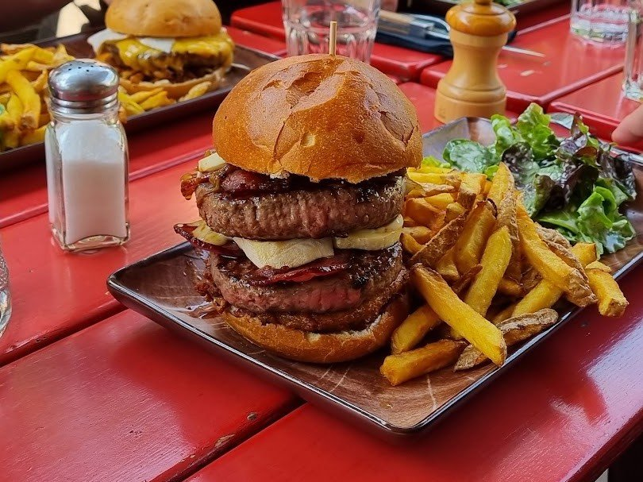
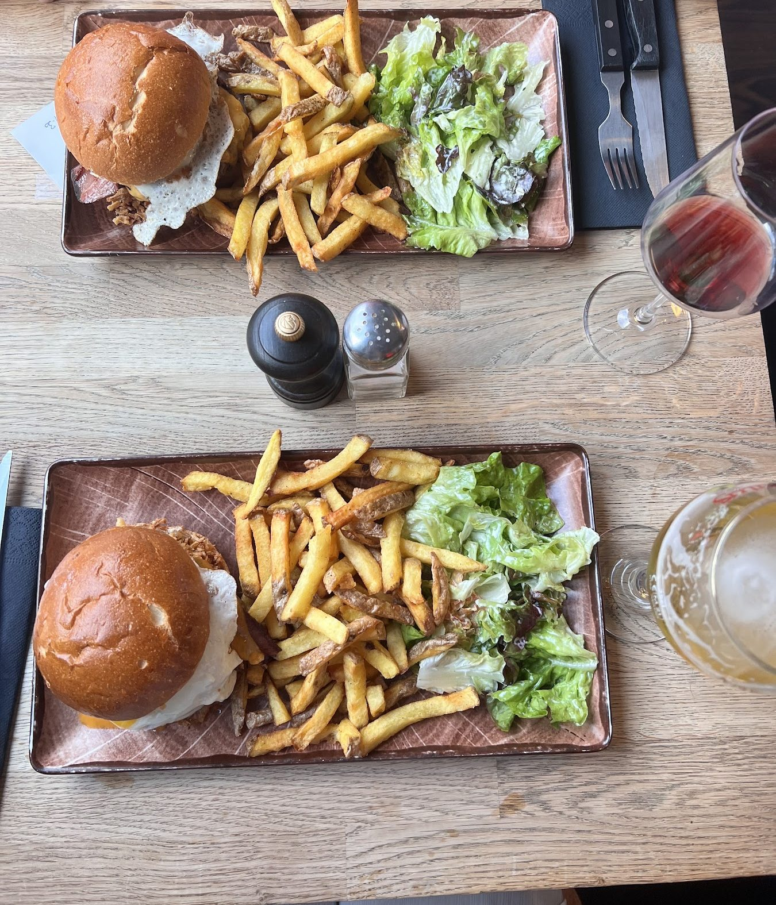
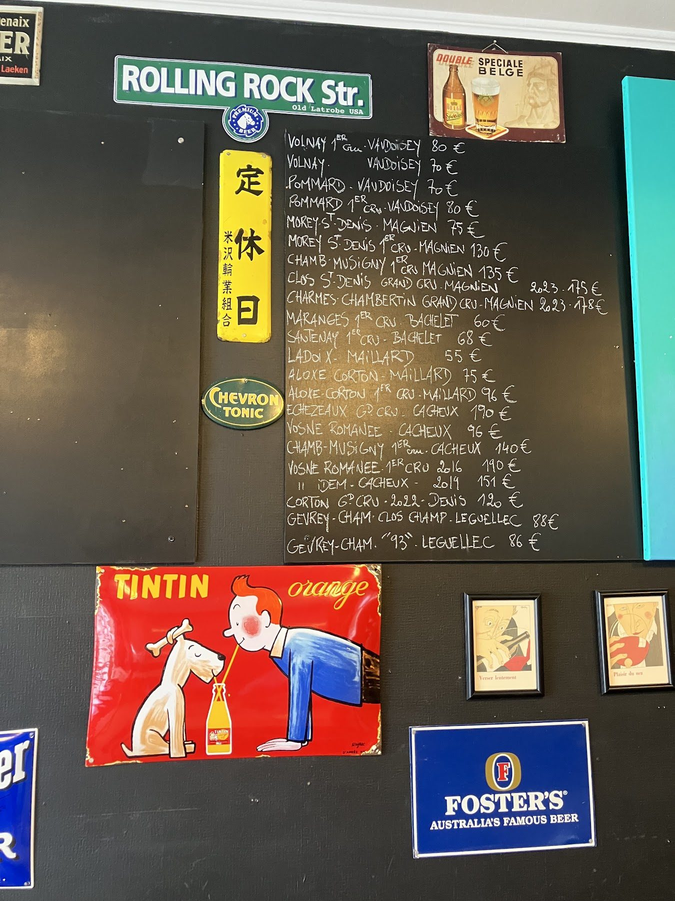
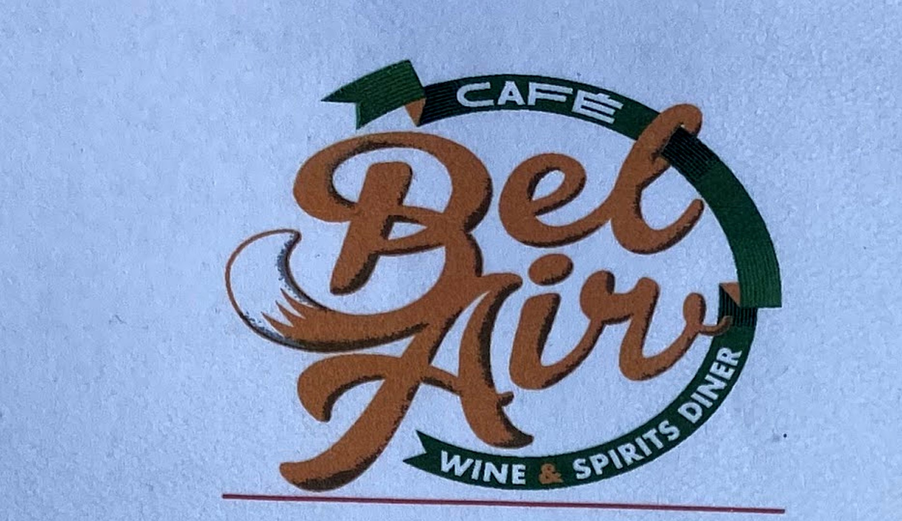
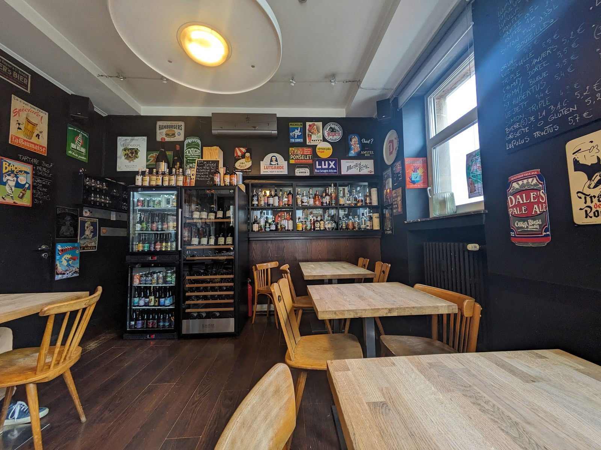

Munsterosaurus
à conf.Notre signature. Steak haché juteux, Munster crémeux du terroir.
Signature Photo : burger maison — illustration, plat susceptible de varier
Le petit bistrot dont tout Luxembourg parle. Les tables partent vite — réservez la vôtre.
Réserver une table ☎
La carte des burgers arrive écrite sur de vieux comics ; les vins, eux, sont à la craie sur le mur noir — entre plaques de bière vintage et une pub Tintin qui n'a pas pris une ride. Rien n'est imprimé pour faire joli : c'est vraiment comme ça, chaque soir.

Notre badge — pris en photo directement sur notre carte, pas redessiné.
Les menus, écrits sur de vieux comics.
Le patron passe de table en table, comme à la maison.
Tout est fait maison — desserts signés Pain de Mary.
Souvent complet — réservation vivement conseillée.